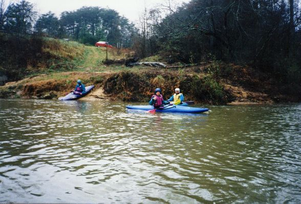
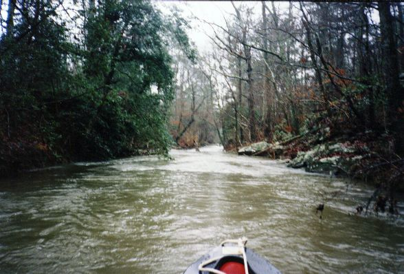
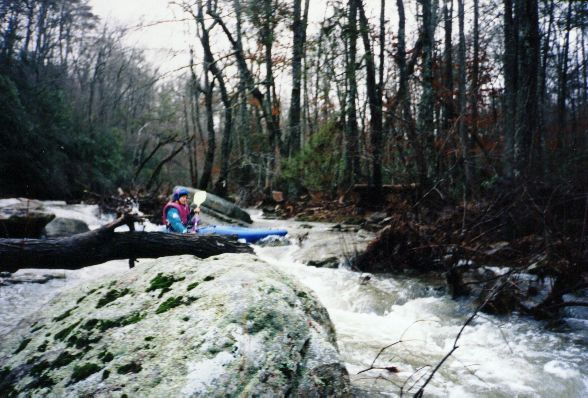
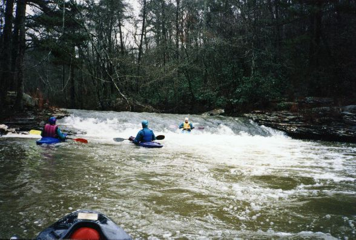

Shoal Creek (Scarham tributary)

Barry Hart signals that indeed the 'risk appears
minimal' at the shoal put-in. The now-totaled Acura can be seen in the background. John Parker dons
his skirt while Mark English gathers his thoughts. (1995)

A typical view down Shoal. Pretty with many
a Rhododendron type plant. (I know, its not in focus, sorry)

It is tight, but not too steep. Barry Hart
avoids rocks and holes Or was he stuck at this point? Hmmm...

The slide towards the bottom. Mark English
takes the potentially sticky center line while Barry and John prepare for potential carnage. Side surfs here
are not uncommon.